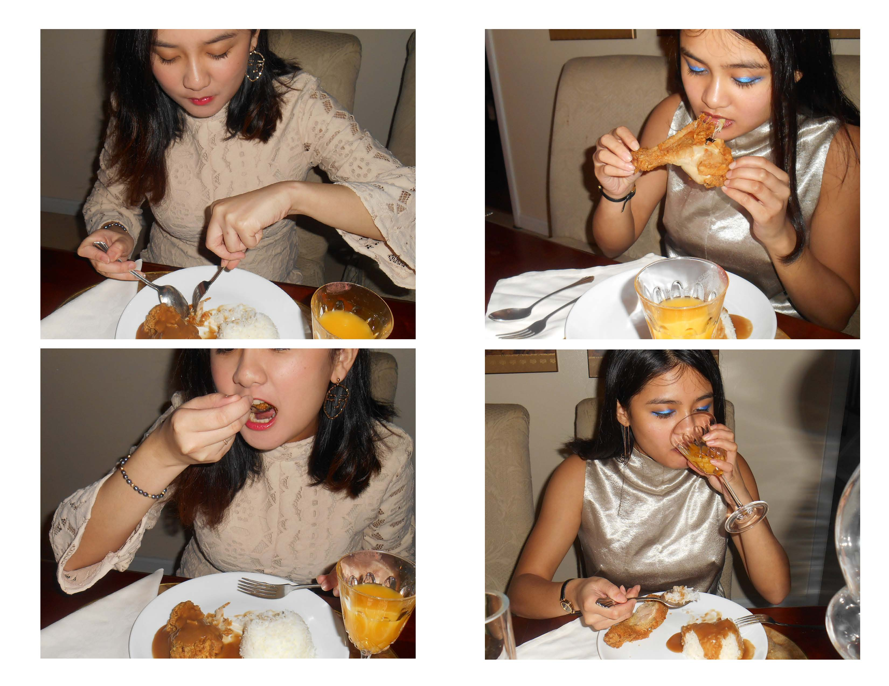
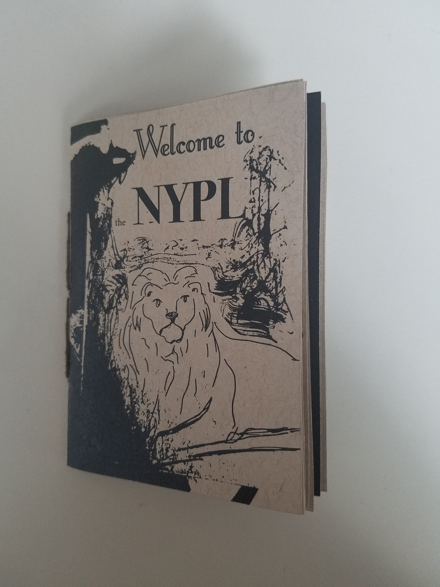
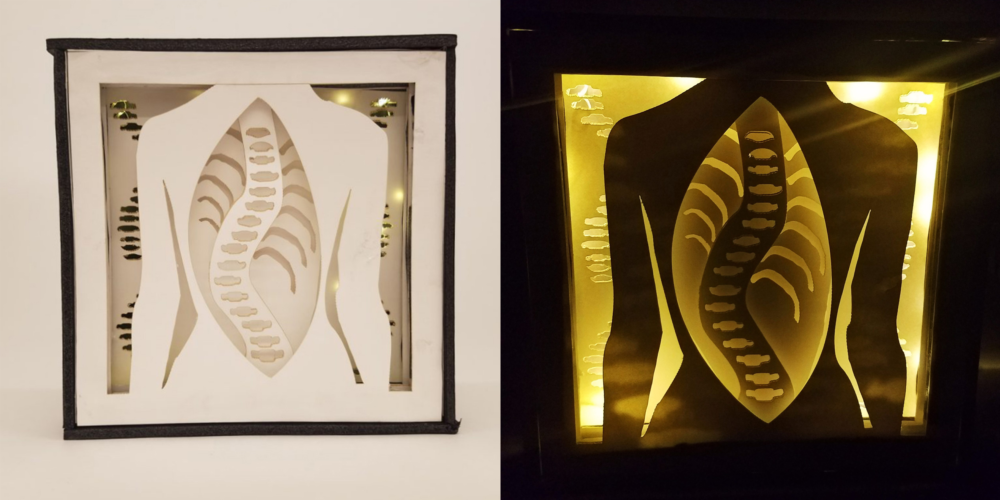
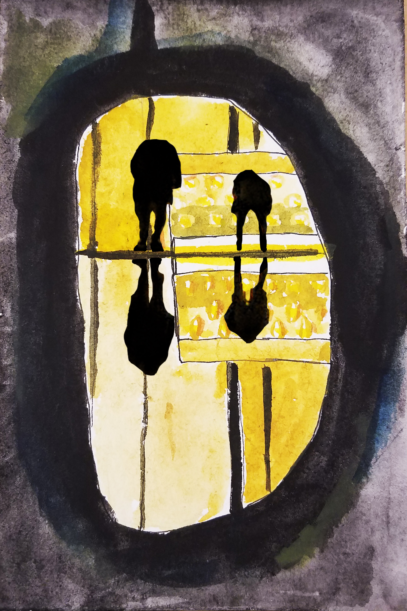

Self Portrait (2017) acrylic and water color on bristol

This wearable soft sculpture is a representation of my experience as a first generation Filipino American. I created a mask to be worn over my nose and mouth, symbolic of restrain. The mask consists of a mouth with pieces of white bread stuffed into it and a huge, fat tongue cascading down from the bread-stuffed mouth. The white bread is suffocating the mouth, making it unable to breathe or talk. On the tongue are embroideries inspired by the tribal tattoos characteristic of pre-colonial Philippines. In this case the “Wonderbread” is representative of white America and the need to assimilate to survive. The tongue represents the Tagalog language. White America is literally not allowing me to speak the language of my parent’s homeland. This idea came about from my inability to speak the language of my parents as a result of the desire to assimilate to American culture.
This is a spread of a photo booklet I made illustrating the unique experience of being Filipino American. Of these unique experiences, I wanted to portray the times I visited the restaurant Jollibee. Jollibee is the Philippine equivalent of McDonald’s – just fast food. For any native born Filipino, Jollibee would not be anything special but, for me, it was a treat. I never really experienced any Filipino culture where I grew up. The only other Filipinos I knew were my family which made trips to Jollibee so special. Doing anything involving Pinoy culture outside of the family was a rarity and something I always looked forward to. This sentiment went for both me and my sister who experienced the same culture questions as me.
"Welcome to the NYPL" is a pocket-sized zine I created showcasing both the history and present experiences representative of New York's very own public library.
I created this shadow box to represent my scoliosis. The shapes were cut out of bristol paper with the use of a laser cutter.
Lincoln Center (2017) Collection of mixed media works (watercolor and digital)